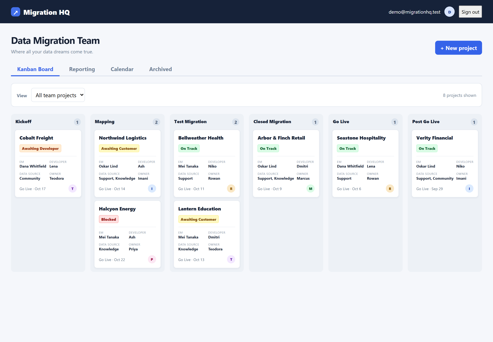
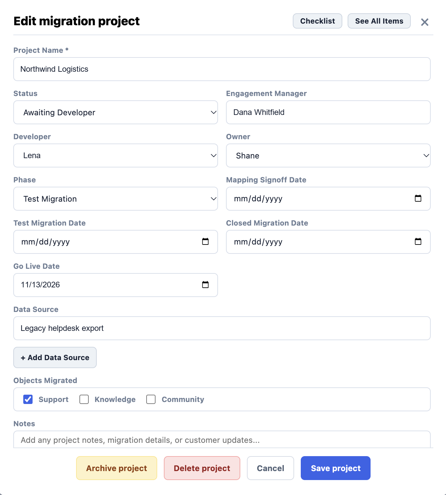

Migration HQ
Supabase · Vercel Internal team toolThe board a migration team runs on.
Every migration is a card moving through six phases, each with an owner and the four dates that matter.




- Institutional memory, as dataEvery closed migration leaves a searchable record.
- Reporting built inCounts, a chart and filters, not an export.
- Security by policyPostgres row-level security, magic-link auth, no password to leak.